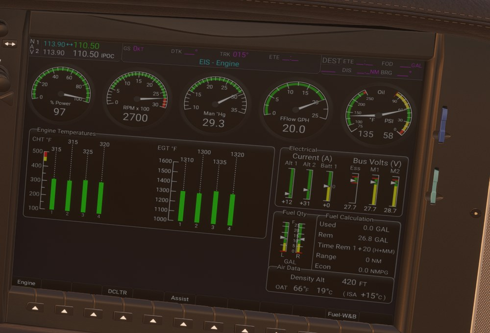

Aircraft and systems
This chapter covers the aircraft itself: how the SR20 flies, the engine and its single power lever, fuel, the engine and system pages on the MFD, the crew alerting system (CAS), the electrical system, the circuit breaker panel, the equipment the SR22T has and the SR20 does not, and the checklists.
The numbers come from the Cirrus SR20 G6 POH (P/N 11934-005 Reissue A, serials 2220 and 2339 and up, Perspective+). Section and page references in this chapter are to that POH unless they say otherwise. Where the mod had to choose its own value, or where the sim stops short of the real aircraft, the text says so.
None of the features in this chapter need the SR20 Companion.
Flight model and performance
What it does. The mod keeps the stock SR22T airframe, 3D model and cockpit, and replaces what makes it fly like an SR20: weights, centre of gravity limits, fuel, engine, propeller, reference speeds, stall character, nosewheel and the performance tables of the sim's EFB.
Weights and limits
| Item | SR20 value | Source |
|---|---|---|
| Maximum takeoff and landing weight | 3,150 lb | POH §2 p.2-8 |
| Basic empty weight | 2,150 lb at FS 139.5 | Not from the POH (it has only a blank form). A representative G6 figure. |
| Maximum baggage | 130 lb | POH §2 p.2-8 |
| Seats | Pilot and four passengers (two front, three rear) | POH §2 p.2-18 |
| CG envelope, forward limit | FS 137.8 at 2,100 lb, FS 139.1 at 2,700 lb, FS 141.1 at 3,150 lb | POH §2 Figure 2-1 |
| CG envelope, aft limit | FS 148.1 from 2,100 to 3,150 lb | POH §2 Figure 2-1 |
| Vne | 201 KIAS (no altitude table) | POH §2 p.2-4 |
| Vno | 164 KIAS | POH §2 p.2-4 |
| Vfe | 150 KIAS flaps 50 %, 110 KIAS flaps 100 % | POH §2 p.2-4 |
| Maximum operating altitude | 17,500 ft | POH §2 p.2-18 |
| Flight into known icing | Prohibited (no ice protection) | POH §2 p.2-17 |
The PFD airspeed tape shows the SR20 arcs: red below 62 KIAS, white 62 to 110, green 71 to 164, yellow 164 to 201 and the barber pole from 201 (POH §2 p.2-5).
V-speed bugs on the PFD
The reference speeds appear as bugs on the airspeed tape, with a letter beside each.
| Bug | Tape letter | Speed | Source |
|---|---|---|---|
| Glide | G | 100 KIAS | Best glide, flaps up, at 3,150 lb (92 KIAS at 2,600 lb), POH §3 and §4 p.4-3 |
| Vy | Y | 96 KIAS | Best rate of climb at sea level, POH §4 p.4-3 |
| Vx | X | 81 KIAS | Best angle of climb, flaps 50 %, POH §4 p.4-3 (the POH gives no flaps-up Vx) |
| Vr | R | 71 KIAS | Rotation, flaps 50 %, POH §4 p.4-3 |
The glide bug is set for maximum weight. If you fly light, the best glide speed is lower: 92 KIAS at 2,600 lb.
Changing them. The bugs are the stock G1000 NXi references.
- On the PFD press the Tmr/Ref softkey.
- Turn the large FMS knob to the speed you want to change.
- Turn the small FMS knob to change the value, or to switch the bug on or off.
- Press Tmr/Ref again to close the window.
Stall behaviour
The SR22T base model broke a wing in every coordinated stall when it was flown with SR20 values. The mod moves the start of the stall later in the angle of attack and adds wing-tip and aileron relief, so the outer wing stalls last.
What you feel. A coordinated power-off stall mushes with a gentle nose drop and the wings can be held nearly level
with coordinated aileron and rudder, as POH §4 p.4-23 describes. The stall horn sounds and the red STALL CAS
warning comes on together (see CAS alerts).
Limits. The stall was tuned by feel against the POH description. An uncoordinated stall can still drop a wing. The full-flap stall has had less flight testing than the clean stall.
Nosewheel and brakes
The SR20 nosewheel castors freely, about 85° each side of centre, and you steer with differential braking (POH §7 p.7-25). The stock SR22T steers the nosewheel from the rudder pedals. The mod makes it free castering, with the castering behaviour of the sim's DA40 NG and the 85° limit from the POH.
What you notice. The rudder pedals do not steer on the ground at low speed. Use the toe brakes. Toe-brake response is softer than stock so that a single tap does not swing the nose.
Tuned against the POH
| Item | What was done |
|---|---|
| Engine power | Calibrated at sea level and at 4,000 ft full throttle: 211 hp static at sea level (about 213 expected for the test conditions, 215 rated), 181 hp at 4,000 ft (POH 181). Within about 2 %. |
| Full-throttle fuel flow | 20 GPH at sea level, full rich (POH §4 p.4-15) |
| Static RPM | 2,700 RPM at full throttle on the ground (POH §4 p.4-15) |
| Idle | Tuned toward a real SR20's idle of about 650 to 700 RPM |
| EGT shape | Best power 100 °F rich of peak, best economy from peak to 50 °F lean of peak (POH §4 p.4-20) |
| Percent power and target fuel flow | Fitted to the POH §5 cruise tables (p.5-31 and 5-32) |
| Cruise speed | Checked against POH §5 at 4,000, 6,000 and 8,000 ft |
| EFB performance tables | The sim's EFB flight planner uses SR20 climb, cruise, takeoff and landing data from POH §5 |
| Propeller | Hartzell three-blade, 74 in, constant speed (POH §1 p.1-7) |
Differences from the real aircraft / limits. No sim aircraft flies exactly like the real one. Expect cruise speeds and climb rates a few percent off the POH tables, and the climb at altitude better than the book. The exterior, the cockpit and the placards are the stock SR22T's.
Engine
What it does. The engine is a Lycoming IO-390-C3B6: four cylinders, fuel injected, naturally aspirated, 215 hp at 2,700 RPM (POH §1 p.1-7). The SR22T's engine computer, which drove its turbocharger and rescaled the mixture, is replaced by an SR20 engine computer.
Single power lever and the governor
The SR20 has one power lever. The propeller governor is cammed to it: 2,500 RPM from idle through the cruise range and 2,700 RPM at full power (POH §7, Powerplant Controls).
- From idle to 96 % of lever travel the governor targets 2,500 RPM.
- Over the last 4 % of travel the target rises to 2,700 RPM.
- At low power the engine cannot reach 2,500 RPM, so the RPM follows the lever until it does.
Hardware throttles. You only get 2,700 RPM with the lever fully forward. If your throttle axis does not reach 100 %, you will see about 2,500 to 2,600 RPM at "full power". Calibrate the axis so the end of travel reads 100 %.
Mixture and leaning
The mixture lever goes straight to the engine. The SR22T's computer changed the mixture with manifold pressure; the SR20 computer does not.
- Climb. The top of the green arc on the fuel flow gauge moves with altitude. It is the full-power target fuel flow from POH §4 p.4-15: 20 GPH at sea level, 18 at 4,000 ft, 16 at 8,000 ft, 15 at 12,000 ft, 13 at 16,000 ft and 12 at 18,000 ft. Lean in the climb to keep the fuel flow at the top of the arc.
- Cruise. Below 75 % power a cyan target fuel flow marker appears on the fuel flow gauge (POH §7 p.7-43). It shows the fuel flow for best economy at the present power. Lean until the needle meets the marker. The marker disappears above 77 % and below about 40 % power. The low-power cut-off is the mod's choice; the POH gives none.
- Best power is about 100 °F rich of peak EGT. Best economy is from peak to 50 °F lean of peak (POH §4 p.4-20).
- Lean assist. On the MFD engine page, the Assist softkey turns on the stock lean assist. As you lean, it
marks the peak EGT of each cylinder and shows the difference from peak (
Δ PEAK).
Percent power
Percent power is computed from manifold pressure, RPM, pressure altitude and outside air temperature, as on the real Perspective+ (POH §4 p.4-20). It does not change when you move the mixture. Below 5 % it reads 0. The value is smoothed over about 1.5 seconds, so it lags a quick power change slightly.
Starting the engine
Use the SR20 Starting Engine checklist (MFD checklists, Normal Procedures). Differences from the stock SR22T:
- The fuel pump switch has no PRIME. Forward (BOOST) is on, centre is off. If you move it aft, it springs back to BOOST. See Fuel.
- The mixture lever is not rescaled. Full forward is full rich.
- The checklist sequence is: power lever open 1/4 inch, mixture cutoff, fuel pump on, mixture rich for 3 to 5 seconds until fuel flow is stable, mixture cutoff, then start and advance the mixture smoothly once the engine runs. Retard to 1,000 RPM and turn the fuel pump off.
- The sim's auto-start also works.
START ENGAGED comes on as a caution if the starter runs longer than 15 seconds and as a warning after 30 seconds.
Differences from the real aircraft / limits. Absolute EGT values are estimates (peak near 1,500 °F); the shape of the leaning curve follows the POH, the exact temperatures are not from a real engine. Compression ratio and some internal engine constants are inherited from the SR22T because the POH does not give them.
Fuel
What it does. Two wing tanks of 29.3 gal each, 58.5 gal total, of which 56.0 gal are usable (POH §2 p.2-17). The mod shows usable fuel everywhere, as the real gauges do.
Usable gallons
The sim counts the unusable fuel (1.25 gal per tank) in its tank quantities, and the engine stops when only that is left. The mod subtracts it before the G1000 sees it. So:
- An empty tank reads 0.0 on the gauges, not 1.25.
FUEL LOW LEFTandFUEL LOW RIGHTcan fire (below 1 gal usable in a tank).FUEL LOW TOTALandFUEL IMBALANCEuse usable fuel.
Fuel gauges
The EIS fuel quantity tapes are scaled for the SR20's 28 usable gallons per tank: red at 0, yellow from 0 to 10, green from 10 to 28 gal (POH §2 p.2-10). The fuel flow gauge reads 0 to 25 GPH.
Fuel totalizer and the Initial Usable Fuel page
The G1000's fuel calculations (Used, Rem, Time Rem, Range, Econ on the engine page) come from a
totalizer: fuel flow integrated from the amount you enter at the start of the flight. The FUEL LOW CAS alerts do not
use the totalizer; they use the sensed tank quantities.
To set the starting fuel:
- On the MFD press Engine, then Fuel-W&B. The page titled Initial Usable Fuel opens, headed
Cirrus SR20. - Press Full for full tanks (56 gal usable) or Tabs for tanks filled to the tabs (13 gal usable per tank, 26 gal; POH §7 p.7-39). Or set any amount with the FMS knobs: the small knob changes by 1 gal, the large knob by 10 gal. The range is 0 to 56 gal. Fuel Added shows the change.
- Press ENT (or the W&B softkey) to save and go to the Weight and Balance page. Undo discards the change.
In version 1.0.0 the Full and Tabs softkeys set the SR22T's 92 and 60 gal. Update to 1.0.1, or set the fuel with the knobs.
Boost pump
The SR20 has an electric boost pump with two positions, OFF and ON (POH §7 p.7-40). The SR22T's switch has three:
| SR22T switch position | What it does in the SR20 |
|---|---|
| Forward (BOOST) | Pump on |
| Centre | Pump off |
| Aft (PRIME) | Springs back to forward: pump on |
The pump is powered from MAIN BUS 2 through the FUEL PUMP breaker.
Fuel range ring
The navigation maps can show a fuel range ring. It is described in Terrain, surface and protection systems.
Differences from the real aircraft / limits. The sim has no separate totalizer sensor; the totalizer is the stock G1000 NXi calculation from fuel flow.
Engine and system displays
MFD engine page
Where to find it. On the MFD press Engine (the leftmost softkey). Press it again to go back to the navigation map.

The page, titled EIS - Engine, is laid out from photographs of a real SR20 G6:
| Area | Contents |
|---|---|
| Top row of dials | % Power (0 to 100), RPM x 100 (0 to 30), Man "Hg (10 to 35), FFlow GPH (0 to 25), Oil (temperature in °F and pressure in PSI on one dial) |
| Engine Temperatures | CHT °F (100 to 500) and EGT °F (1,000 to 1,600), four cylinders each, no TIT |
| Electrical | Current (A): Alt 1, Alt 2, Batt 1. Bus Volts (V): Ess, M1, M2 (M1 = Main Distribution Bus 1, fed by ALT 1; M2 = Main Distribution Bus 2, fed by ALT 2) |
| Fuel Qty | Left and right tanks in usable gallons |
| Fuel Calculation | Used, Rem, Time Rem, Range, Econ (totalizer) |
| Air Data | Density Alt, OAT in °F and °C, ISA deviation |
The SR22T's anti-ice and oxygen panels are not shown.
Softkeys on the engine page:
| Softkey | What it does |
|---|---|
| Engine | Back to the navigation map |
| DCLTR | Nothing (inoperative in the stock aircraft too) |
| Assist | Lean assist on or off (see Mixture and leaning) |
| Fuel-W&B | Opens the Initial Usable Fuel page |
Gauge markings follow POH §2 p.2-9 and p.2-10: CHT green 240 to 435 °F, yellow 435 to 465, red above 465; oil temperature green 100 to 235 °F; manifold pressure green 15 to 29.5 inHg; RPM green 500 to 2,700; volts green 24.5 to 32.
EIS strip
On the other MFD pages the engine data is in a narrow strip on the left: percent power, RPM, manifold pressure, fuel flow, oil temperature and pressure, CHT and EGT, fuel quantity and the electrical values. It uses the same SR20 ranges and the same four cylinders.
Reversionary mode
When the MFD fails or loses power, the PFD goes into reversionary mode and shows its own engine strip. In the mod that strip has four CHT and EGT columns, an EGT °F label in place of EGT/TIT, and no TIT, oxygen or anti-ice rows.
You can see it by pulling both the MFD A and MFD B breakers (see Circuit breaker panel).
Weight and Balance page
Where to find it. The first page of the MFD Aux page group (Weight and Balance), or from the engine page: Fuel-W&B, then W&B.
The page, titled Aux - Weight and Balance, uses the SR20 data:
- Basic empty weight 2,150 lb (a representative G6 figure, not from the POH).
- Stations Pilot, Copilot, Pass L, Pass M, Pass R and Baggage at the POH §6 p.6-6 arms (front seats FS 143.5, rear seats FS 180.0, baggage FS 208.0, fuel FS 153.8). The SR22T's TKS fluid row is gone.
- Maximum weight 3,150 lb and the CG envelope of POH §2 Figure 2-1. CG is also shown in % MAC (LEMAC FS 133.1, MAC 47.7 in, POH §6 p.6-3).
- Fuel in usable gallons, 56 maximum.
Softkeys: Engine, Graph (the station-versus-weight graph, with Zoom and Back), Fuel, Confirm (writes the weights you entered to the sim) and Checklist.
Target fuel flow
The cyan target fuel flow marker on the fuel flow gauge is described under Mixture and leaning. It is shown at 75 % power and below (with some hysteresis, see above).
Circuit breaker effects on the displays
- ENGINE INSTR pulled: the engine values disappear from the EIS strip, the engine page and the reversionary strip.
- FUEL QTY pulled: the fuel quantities disappear.
Differences from the real aircraft / limits. The basic empty weight is not your aircraft's. The DCLTR softkey does nothing.
CAS alerts and messages
What it does. The crew alerting system follows the SR20 rules of POH §2 (gauge markings and their delays), §3 and §3A. The SR22T rules for equipment the SR20 does not have are removed.
Where to find it. CAS messages appear in the CAS window on the PFD, to the right of the vertical speed indicator. Warnings are red, cautions amber, advisories white. Press the Alerts softkey on the PFD to read the longer text of each message in the Alerts window.
Every CAS line clears by itself when its condition ends. Delays below are how long the condition must hold before the message appears.
Warnings (red)
| CAS text | Trigger | Clears when |
|---|---|---|
OIL PRESS |
Oil pressure below 25 or above 115 psi | Pressure back between 25 and 115 psi |
OIL TEMP |
Oil temperature above 235 °F | Temperature at or below 235 °F |
CHT |
Any CHT above 465 °F | All CHTs at or below 465 °F |
RPM |
Above 2,730 RPM for more than 5 s, or above 2,710 RPM for more than 10 s (POH §2 p.2-9 note a) | RPM at or below 2,710 |
FUEL LOW TOTAL |
Total usable fuel below 7 gal | 7 gal or more |
FUEL LOW LEFT |
Left tank below 1 gal usable | 1 gal or more |
FUEL LOW RIGHT |
Right tank below 1 gal usable | 1 gal or more |
FUEL IMBALANCE |
Left and right differ by more than 9.5 gal | Difference 9.5 gal or less (the caution or advisory may remain) |
ESS BUS |
Essential bus at or below 24.4 V, or above 32 V | Voltage above 24.4 V and not above 32 V |
M BUS 1 |
Main bus 1 above 32 V | 32 V or less |
M BUS 2 |
Main bus 2 above 32 V | 32 V or less |
STALL |
The stall warning is sounding and the aircraft is in the air | Stall warning stops, or on the ground |
START ENGAGED |
Starter engaged for 30 s | Starter released |
UNDERSPEED PROTECT ACTIVE |
Autopilot underspeed protection is acting | Protection ends. See GFC 700 speed protection |
CAPS ACTIVATED |
The parachute has been deployed (stock) | Never in that flight |
Cautions (amber)
| CAS text | Trigger | Clears when |
|---|---|---|
OIL PRESS |
Oil pressure from 25 psi up to (not including) 55 psi with the engine above 1,000 RPM (POH §2 p.2-9 note b) | Pressure 55 psi or more, or RPM 1,000 or less |
OIL TEMP |
Oil temperature 235 °F or more | Below 235 °F |
CHT |
Any CHT above 435 °F | All CHTs at or below 435 °F |
FUEL LOW TOTAL |
Total usable fuel 10 gal or less (POH §3A p.3A-10) | More than 10 gal |
FUEL IMBALANCE |
Left and right differ by more than 7.5 gal (checklist card Rev C) | 7.5 gal or less |
M BUS 1 |
Main bus 1 at or below 24.4 V | Above 24.4 V |
M BUS 2 |
Main bus 2 at or below 24.4 V | Above 24.4 V |
ALT 1 |
ALT 1 current 0 to 1 A for 20 s (POH §2 p.2-10) | Current above 1 A |
ALT 2 |
ALT 2 current 0 to 1 A for 20 s | Current above 1 A |
BATT 1 |
Battery 1 discharging 5 to 59 A for 30 s | Discharge less than 5 A |
AVIONICS OFF |
Avionics switch off, or the AVIONICS breaker pulled | Avionics bus on |
START ENGAGED |
Starter engaged for 15 s | Starter released |
FLAP OVERSPEED |
Flaps 50 % above 155 KIAS, or flaps 100 % above 115 KIAS, for 5 s (POH §3A p.3A-19) | Speed below the limit or flaps up |
TAKEOFF FLAPS |
On the ground above 2,400 RPM with the flaps not at 50 %, for 1 s | Flaps 50 %, power reduced, or airborne |
PARK BRAKE |
Parking brake set | Parking brake released |
PITOT HEAT REQD |
Pitot heat off with OAT below 5 °C, for 15 s | Pitot heat on, or OAT 5 °C or more |
PITOT HEAT FAIL |
Pitot heat switch on, its bus powered, but the heater circuit dead (for example the PITOT HEAT breaker pulled), for 5 s | Heater powered, or switch off |
Advisories (white)
| CAS text | Trigger | Clears when |
|---|---|---|
FUEL IMBALANCE |
Left and right differ by more than 5.5 gal (POH §3A p.3A-11) | 5.5 gal or less |
FLAPS CLIMB |
Flaps not up, more than 1,000 ft above the ground and climbing at 200 fpm or more, for 30 s | Flaps up, or not climbing |
HDG MODE |
Autopilot in HDG for 10 minutes without a heading bug change (stock NXi) | Bug moved or mode changed |
ROL MODE |
Autopilot in ROL for 30 s (stock NXi) | Mode changed |
PFD FAN FAIL |
PFD cooling fan unpowered (AVIONICS FAN 1 breaker) with the PFD on, for 2 s | Fan powered |
MFD FAN FAIL |
MFD cooling fan unpowered (AVIONICS FAN 2 breaker) with the MFD on, for 2 s | Fan powered |
SFC WATCH INHIB |
SurfaceWatch inhibited on the MFD (see SurfaceWatch Inhibit) | Inhibit off |
TAWS OBSTACLE N/A |
TAWS has no obstacle data (see TAWS-B) | Obstacle data back |
ALTITUDE SEL |
Autopilot on, more than 100 ft from the selected altitude and flying away from it: in VS with a selected rate of 100 fpm or more away from it for 3 s, or in PIT with 300 fpm or more away from it for 15 s. Alerts text: "Climbing away from selected altitude." or "Descending away from selected altitude." | Back toward the selected altitude, or a different mode |
COURSE SELECT |
Autopilot in ROL with GPS, VOR or LOC armed, wings within 6° of level, ground speed 30 kt or more, and the present track will not intercept the selected course, for 10 s | Track converges, or the mode changes |
VNAV ALT SEL |
Top of descent within 60 s, VNAV on, but the selected altitude is not at least 75 ft below the aircraft, so the path cannot arm | Selected altitude set lower |
VNAV NOT ARMED |
Top of descent within 60 s and VNAV (VNV) deselected | VNV pressed, or the top of descent passed |
The texts and thresholds of ALTITUDE SEL, COURSE SELECT, VNAV ALT SEL and VNAV NOT ARMED follow the
GFC 700 supplement (S57 p.9-10) and the Pilot's Guide appendix A. The hold times and bands are the mod's own; the
sources give none.
Other messages and annunciations
| Text | Where | Trigger |
|---|---|---|
TIMER EXPIRD |
PFD Alerts window | The PFD countdown timer reaches zero. Cleared when you reset or restart the timer. A "Timer expired" voice plays. |
ESP OFF, ESP DEGRADE, ESP FAIL |
PFD Alerts window | See ESP advisories |
LOW ALT |
PFD, beside the TAWS annunciation | See LOW ALT annunciation |
PITOT HEAT FAIL, SFC WATCH INHIB, the four autopilot advisories and TIMER EXPIRD wait 10 seconds after the PFD
powers up before they can appear.
SR22T alerts removed
These SR22T CAS messages never appear in the SR20:
| SR22T CAS text | Why |
|---|---|
ANTI ICE QTY, ANTI ICE TEMP, ANTI ICE SPEED, FLAPS ICE, EXIT ICING |
No TKS ice protection |
TIT |
No turbocharger |
MAN PRESSURE |
Normally aspirated engine |
FUEL FLOW |
Not an SR20 CAS message |
Thresholds changed from the SR22T to the SR20 values: CHT (four cylinders, 435 / 465 °F), OIL PRESS caution,
OIL TEMP, RPM, FUEL LOW TOTAL (7 / 10 gal), FUEL IMBALANCE (5.5 / 7.5 / 9.5 gal), FLAP OVERSPEED, the 20 s
delay on ALT 1 and ALT 2 and the 30 s delay on BATT 1. STALL now follows the stall warning, so the CAS and
the horn come on together (stock lit it only at the stall angle of attack).
Differences from the real aircraft / limits.
- The CAS names follow the POH (2020). The checklist card (Rev C) uses some newer names:
FUEL QTY,STARTER ENGAGED,PITOT HEAT REQUIRED,FLAPS. The checklists in the mod keep the card's names, so a CAS checklist title can differ from the CAS text. - Not modelled, although the checklist card lists them:
BRAKE TEMP,CO LVL HIGH, theMISCOMPcautions,AP/PFD AHRS,NO ADC MODES,NO VERT MODES,HYPOXIA ALERT,AUTO DESCENT. The sim has no sensors for them. HDG MODEandROL MODEare stock G1000 NXi advisories. They are in neither the POH nor the card.
Electrical system
What it does. The stock SR22T has five buses with no diodes: every source feeds everything, so ALT 1 and ALT 2 look the same and a battery failure changes little. The mod rewires the aircraft to the SR20 design of POH §7 pp.7-46 to 7-53: twelve buses, the real split between the two alternators, BAT 2 on ESS BUS 1, and modelled bus voltages.
Switches
The master switches are the stock cockpit switches.
| Switch | What it does |
|---|---|
| BAT 1 | Connects battery 1 to the main distribution buses and the starter. ALT 1 needs BAT 1 for field power: with BAT 1 off, ALT 1 drops off line, even with the engine running. |
| BAT 2 | Connects battery 2 to ESS BUS 1 only. With BAT 2 alone: PFD, COM 1, GPS/NAV 1 and the ESS buses come on; the MFD and the main buses stay off (POH §7 p.7-52). |
| ALT 1 | Alternator 1 on line (needs BAT 1 on to start) |
| ALT 2 | Alternator 2 on line (needs BAT 1 or BAT 2 on to start) |
| AVIONICS | Powers the AVIONICS bus: transponder, audio panel, data link. Off gives AVIONICS OFF. |
Sources and what they feed
| Source | Rating | Normally feeds |
|---|---|---|
| ALT 1 | 100 A, regulated 27.7 V | Main Distribution Bus 1: MAIN BUS 3 (MFD A, 12 V and USB power), the A/C buses and the landing, taxi and wing lights. Charges BAT 1. |
| ALT 2 | 70 A, regulated 28.7 V | Main Distribution Bus 2: MAIN BUS 1, MAIN BUS 2, NON-ESSENTIAL BUS and the AVIONICS bus, and through the Essential Distribution Bus ESS BUS 1 and ESS BUS 2. Charges BAT 2. |
| BAT 1 | 24 V, 10 Ah | Main Distribution Bus 1 and the starter. Takes over ALT 1's loads if ALT 1 fails. |
| BAT 2 | 2 × 12 V, 7 Ah | ESS BUS 1, and ESS BUS 2 through the ESSENTIAL POWER breaker |
Ratings from POH §7 p.7-46. The Main Distribution Bus 1 to Bus 2 interconnect has a diode: ALT 2 cannot feed Main Distribution Bus 1. The mod emulates the diodes by opening and closing bus links.
Buses
| Bus | Loads |
|---|---|
| ESS BUS 1 | BAT 2, ESSENTIAL POWER, GPS NAV GIA 1, COM 1, ADAHRS 1, STDBY ATTD A, PFD A |
| ESS BUS 2 | ALT 2 field, ENGINE INSTR, STALL WARNING, ROLL TRIM, PITCH TRIM |
| MAIN BUS 1 | AVIONICS (feeds the AVIONICS bus), ICE LIGHTS, STDBY ATTD B, MFD B, CABIN LIGHTS, FUEL QTY, AP SERVOS, KEYPADS/AP CTRL, CABIN AIR CONTROL |
| MAIN BUS 2 | AVIONICS FAN 2, GPS NAV GIA 2, COM 2, ADAHRS 2, FUEL PUMP, PFD B |
| MAIN BUS 3 | LANDING LIGHTS, 12V & USB POWER, MFD A (EVS CAMERA not installed) |
| NON-ESSENTIAL BUS | STARTER, AVIONICS FAN 1, NAV LIGHTS, STROBE LIGHTS, PITOT HEAT, FLAPS |
| A/C BUS 1 and 2 | A/C COND, ALT 1 field, A/C COMPR, CABIN FAN |
| AVIONICS | AUDIO PANEL, DATA LINK/WEATHER, XPONDER, TRAFFIC (DME / ADF not installed) |
| CONV | CONV LIGHTS (no sim circuit) |
The PFD, the MFD and the standby attitude indicator each have two feeds (A and B). Either feed keeps them on.
What you should see
On the engine page, Electrical panel. The battery current is negative while it discharges.
| State | Alt 1 | Alt 2 | Batt 1 | Ess / M1 / M2 |
|---|---|---|---|---|
| Engine running, both alternators on, no A/C | Low single digits, a few amps more with the landing light | Carries most of the load, about 25 to 30 A | Near 0 | 27.7 / 27.7 / 28.7 V |
| Same, pitot heat on | Unchanged | About 3 A more | Near 0 | Unchanged |
| On batteries before engine start, avionics on | 0 | 0 | Discharging | All about 23 to 24 V |
| BAT 2 alone | 0 | 0 | 0 | ESS only, at battery voltage; MFD dark |
On batteries before engine start the bus voltages are below 24.4 V, so M BUS 1, M BUS 2 and ESS BUS come on
within a few seconds, ALT 1 and ALT 2 after 20 s and BATT 1 after 30 s. They clear once the alternators are on
line. This is how the mod models the batteries under load; see the limits below.
Alternator and battery failures
| What fails | What happens | What you see |
|---|---|---|
| ALT 1 | BAT 1 carries Main Distribution Bus 1 (MAIN BUS 3, A/C, landing light). ALT 2 cannot help through the diode. M1 drops to battery voltage at once. MFD stays on through MFD B. | M BUS 1 at once, ALT 1 after 20 s, BATT 1 after 30 s if the discharge is 5 A or more |
| ALT 2 | ALT 1 carries every bus. No battery discharge. M2 reads about 1 V below M1. | ALT 2 after 20 s |
| Both alternators | BAT 1 carries the main buses. BAT 2 is isolated on ESS BUS 1 and 2, as the real diodes isolate it. | M BUS 1, M BUS 2 and ESS BUS within seconds, ALT 1 and ALT 2 after 20 s, BATT 1 after 30 s |
| Both alternators, then BAT 1 flat | Main buses and MFD go dark. The PFD stays on BAT 2 through PFD A, with COM 1 and GPS/NAV 1. | PFD only |
| BAT 1 switched off in flight | ALT 1 loses field power and drops off line. Main Distribution Bus 1 goes dark; the MFD stays on through MFD B. | ALT 1 |
Load shedding (landing light off) reduces the BAT 1 discharge and moves the BATT 1 reading.
Air conditioning
The A/C load (about 20 A on ALT 1, the reason a real SR20 shows ALT 1 near 25 A with the A/C on) is modelled, and the A/C COND and A/C COMPR breakers cut it. In version 1.0.1 nothing in the cockpit switches it on, so ALT 1 always shows the low no-A/C value.
Differences from the real aircraft / limits.
- Bus voltages are modelled from regulator setpoints, a 1 V diode drop and battery sag under load. They have not yet been compared with readings from a real aircraft.
- Battery endurance is not calibrated. BAT 2 alone lasts longer than the POH's figure.
- The battery relay that opens on a flat battery (and stops an alternator restart) is not modelled.
- External power is not supported.
- Loss of an alternator's field bus (A/C BUS 1 for ALT 1, ESS BUS 2 for ALT 2) is not modelled, except through the ALT 1 and ALT 2 breakers.
- For a few seconds after a flight loads, before the PFD starts, the buses behave like the stock SR22T.
Circuit breaker panel
What it does. A toolbar panel with the full SR20 breaker panel of POH §7 Figure 7-11, in the real layout. Pulling a breaker acts on the real circuit in the sim: the equipment loses power, the displays react and CAS messages appear.
Where to find it. With the SR20 loaded, move the mouse to the top of the screen to show the sim's toolbar and click the SR20 Breakers icon. The panel opens as a toolbar window titled SR20 Breakers. Drag and resize it like any toolbar window; the face scales to fit. The ✕ in the corner closes it.

Layout
Four columns, each divided into bus groups with the bus name above them, as on the real panel. The number on each cap is its rating in amps; caps without a number have a rating the mod has not confirmed.
| Column | Bus groups, top to bottom |
|---|---|
| 1 | CONV, A/C BUS 1, A/C BUS 2, NON-ESSENTIAL BUS |
| 2 | MAIN BUS 3, MAIN BUS 2 |
| 3 | ESSENTIAL BUS 2, ESSENTIAL BUS 1 |
| 4 | MAIN BUS 1, AVIONICS |
Pulling and resetting a breaker
- Click a breaker cap. It pulls out and shows its white collar.
- Click it again to reset it.
- A pull takes effect within about a second. Breakers that serve several circuits switch them one after another: LANDING LIGHTS takes about 1 s, CABIN LIGHTS about 2 s.
- Breakers never trip by themselves. Only you pull them (or an Instructor Station failure).
- A flight restart resets every breaker.
- EVS CAMERA and DME / ADF cannot be pulled (not installed). YAW SERVO is an empty position.
- If the electrical controller stops working, a red dot shows beside each breaker and a line at the bottom of the
panel reads
controller FAULT - breakers not actuatedorcontroller disabled - breakers not actuated. Restart the flight.
What each breaker does
| Breaker | Bus | Amps | Effect when pulled |
|---|---|---|---|
| CONV LIGHTS | CONV | 5 | None (not modelled) |
| A/C COND | A/C BUS 1 | 15 | Cuts the A/C load (see Air conditioning) |
| ALT 1 | A/C BUS 1 | 5 | ALT 1 off line, as an ALT 1 failure |
| A/C COMPR | A/C BUS 2 | 5 | Cuts the A/C load |
| CABIN FAN | A/C BUS 2 | 15 | Cuts the cabin fan load (the fan is normally off; no visible effect) |
| STARTER | NON-ESSENTIAL | 2 | Starter does not crank |
| AVIONICS FAN 1 | NON-ESSENTIAL | 5 | PFD FAN FAIL advisory |
| NAV LIGHTS | NON-ESSENTIAL | Navigation lights off | |
| STROBE LIGHTS | NON-ESSENTIAL | Strobe lights off | |
| PITOT HEAT | NON-ESSENTIAL | 7.5 | Pitot heat off; PITOT HEAT FAIL if the switch is on |
| FLAPS | NON-ESSENTIAL | 10 | Flaps do not move |
| LANDING LIGHTS | MAIN BUS 3 | Landing, taxi and wing lights off | |
| EVS CAMERA | MAIN BUS 3 | 5 | Not installed |
| 12V & USB POWER | MAIN BUS 3 | 5 | Cuts that load (ALT 1 current drops) |
| MFD A | MAIN BUS 3 | 5 | One MFD feed. Alone: no effect. With MFD B: MFD dark, PFD in reversionary mode. |
| AVIONICS FAN 2 | MAIN BUS 2 | 5 | MFD FAN FAIL advisory |
| GPS NAV GIA 2 | MAIN BUS 2 | 5 | NAV 2 and GPS 2 fail |
| COM 2 | MAIN BUS 2 | 7.5 | COM 2 fails |
| ADAHRS 2 | MAIN BUS 2 | 5 | Alone: no effect. With ADAHRS 1: attitude, heading and air data fail on both displays (red X) |
| FUEL PUMP | MAIN BUS 2 | 5 | Boost pump unpowered |
| PFD B | MAIN BUS 2 | 5 | One PFD feed. Alone: no effect. With PFD A: PFD dark. |
| ALT 2 | ESSENTIAL BUS 2 | 5 | ALT 2 off line, as an ALT 2 failure |
| ENGINE INSTR | ESSENTIAL BUS 2 | 3 | Engine values blank on the EIS strip, engine page and reversionary strip |
| STALL WARNING | ESSENTIAL BUS 2 | 2 | None: the stall horn keeps working (not modelled) |
| ROLL TRIM | ESSENTIAL BUS 2 | 2 | None (not modelled) |
| PITCH TRIM | ESSENTIAL BUS 2 | 2 | None (not modelled) |
| ESSENTIAL POWER | ESSENTIAL BUS 1 | ESS BUS 1 is fed by BAT 2 alone, which discharges. On BAT 2 alone it also cuts ESS BUS 2 and ALT 2's field. | |
| BAT 2 | ESSENTIAL BUS 1 | 20 | Battery 2 disconnected |
| GPS NAV GIA 1 | ESSENTIAL BUS 1 | 5 | NAV 1 and GPS 1 fail |
| COM 1 | ESSENTIAL BUS 1 | 7.5 | COM 1 fails |
| ADAHRS 1 | ESSENTIAL BUS 1 | 5 | Alone: no effect. With ADAHRS 2: attitude, heading and air data fail. ESP reports ESP FAIL. |
| STDBY ATTD A | ESSENTIAL BUS 1 | 5 | One standby attitude feed. With STDBY ATTD B: standby attitude circuit off. |
| PFD A | ESSENTIAL BUS 1 | 5 | One PFD feed. With PFD B: PFD dark. On BAT 2 alone, PFD A alone darkens the PFD. |
| AVIONICS | MAIN BUS 1 | 10 | AVIONICS bus dead: transponder, audio panel, data link. AVIONICS OFF. |
| ICE LIGHTS | MAIN BUS 1 | Wing inspection light off | |
| STDBY ATTD B | MAIN BUS 1 | 5 | The other standby attitude feed |
| MFD B | MAIN BUS 1 | 5 | The other MFD feed |
| CABIN LIGHTS | MAIN BUS 1 | 5 | Panel, flood, cabin, pedestal and dome lights off |
| FUEL QTY | MAIN BUS 1 | 5 | Fuel quantity readouts blank |
| AP SERVOS | MAIN BUS 1 | Cuts the sim's autopilot circuit | |
| KEYPADS/AP CTRL | MAIN BUS 1 | 5 | None (not modelled) |
| CABIN AIR CONTROL | MAIN BUS 1 | 2 | None (not modelled) |
| DME / ADF | AVIONICS | 3 | Not installed |
| AUDIO PANEL | AVIONICS | 5 | Audio panel and marker beacon off |
| DATA LINK/WEATHER | AVIONICS | 5 | Cuts the data link circuit |
| XPONDER | AVIONICS | 2 | Transponder fails |
| TRAFFIC | AVIONICS | 5 | None (not modelled) |
Differences from the real aircraft / limits.
- Breakers marked "not modelled" can be pulled and reset but change nothing: the sim has no circuit for those loads.
- With both feeds of the PFD, MFD or standby attitude live, pulling one feed shows nothing until the other bus fails, as in the aircraft.
- The fuses in the master control unit (100, 80, 50, 30, 7.5 and 5 A) are not on the panel, as in the aircraft.
- Some cap ratings (NAV LIGHTS, STROBE LIGHTS, LANDING LIGHTS, ESSENTIAL POWER, ICE LIGHTS, AP SERVOS) are left blank because the POH text does not give them.
Equipment removed versus the SR22T
What it does. The mod takes out the SR22T equipment that an SR20 G6 (Perspective+, non-FIKI, no oxygen) does not have, and hides its controls on the displays.
| Equipment | What the mod does |
|---|---|
| Yaw damper | Removed. The autopilot never engages it: if anything turns it on, including a YD button on the autopilot panel or on hardware, it is switched straight back off. YD does not appear in the autopilot status bar. Autopilot turns need rudder as in the aircraft. |
| ADF | Removed. The ADF/DME softkey on the PFD is gone. The bearing pointers cycle NAV 1, NAV 2, GPS, off, with no ADF. |
| DME | Removed. The DME softkey under PFD Opt is gone. |
| Weather radar | The Weather Radar page is gone from the MFD Map page group. |
| Anti-ice (TKS) | No ice protection: the engine page anti-ice panel, the Anti-Ice softkey on the engine page, the TKS fluid row on the Weight and Balance page and every anti-ice CAS message are gone. |
| Oxygen | The oxygen panel on the engine page and the oxygen row on the reversionary strip are gone. |
| Turbocharger | TIT is gone from the engine page, the EIS and the reversionary strip; TIT and MAN PRESSURE CAS are gone. |
| Wind option 3 | Removed from the PFD wind settings. A saved Option 3 falls back to Off. |
What the cockpit still shows that does nothing
The 3D cockpit and exterior are the stock SR22T's. These parts are still visible:
- The TKS anti-ice switches and panel. They have no effect.
- Oxygen controls and placards.
- The SR22T badges and placards, including the "22T" badge.
- The YD button on the autopilot panel: pressing it turns the yaw damper on for an instant before the mod turns it off again.
- The PRIME (aft) position of the fuel pump switch, which springs back to BOOST.
- The empty YAW SERVO, EVS CAMERA and DME / ADF positions on the breaker panel.
Checklists
What it does. The MFD checklists are the Cirrus SR20 checklist, P/N 38412-102 Rev C, in full.
Where to find it. On the MFD press Checklist (the rightmost softkey on the navigation map). The softkeys on the checklist page are:
| Softkey | What it does |
|---|---|
| Engine | Engine page |
| Group | Choose a group |
| Checklist | Choose a checklist in the group |
| Action | Check the selected item |
| Exit | Back to the previous page |
| EMER | Emergency Procedures group |
The MENU key on the checklist page offers Show Checklist Dropdown, Show Group Dropdown and Show Incomplete Checklists.
Groups
| Group | Checklists | Examples |
|---|---|---|
| Emergency Procedures | 37 | Engine Failure In Flight, Maximum Glide, Engine Partial Power Loss, Low Fuel Quantity, High or Low Voltage on Essential Bus, CAPS Deployment |
| Abnormal Procedures | 11 | Inadvertent IMC Encounter, Door Open In Flight, Pitot Static Malfunction, Electric Trim/Autopilot Failure, Communications Failure |
| Normal Procedures | 20 | Before Starting Engine, Starting Engine, Before Takeoff, Cruise, Before Landing, Balked Landing/Go-Around, Shutdown, Lead Reduction Before Shut Down |
| Crew Alerting System Annunciations | 41 | One per CAS message: OIL PRESS Warning, ALT 1 Caution, M BUS 1 Caution and so on |
| Performance Data | 6 | Takeoff Distance - 3150 LB, Takeoff Distance - 2600 LB, Cruise Performance, Landing Distance - 3150 LB - Flaps 100 % / 50 % / 0 % |
| Checklist Identification | 1 | Part Identification |
Differences from the real aircraft / limits. The CAS group uses the card's message names, some of which differ from
the CAS text the mod shows (see CAS alerts). It also lists messages the mod does not
produce, such as BRAKE TEMP and HYPOXIA ALERT.
Quick reference
| Control | Where | What it does |
|---|---|---|
| Tmr/Ref | PFD softkey | Set or hide the Glide, Vr, Vx and Vy bugs |
| Power lever | Cockpit | Power and RPM: 2,500 RPM to 96 % travel, 2,700 at full |
| Mixture lever | Cockpit | Mixture, passed straight to the engine |
| Fuel pump switch | Cockpit | Forward BOOST = on, centre = off, aft springs back to BOOST |
| Engine | MFD softkey (leftmost) | Engine page on and off |
| Assist | MFD engine page softkey | Lean assist |
| Fuel-W&B | MFD engine page softkey | Initial Usable Fuel page: Full 56 gal, Tabs 26 gal, or the FMS knobs |
| Weight and Balance | MFD Aux page group, first page | SR20 weight and balance |
| Alerts | PFD softkey | Longer text of CAS lines and messages |
| BAT 1, BAT 2, ALT 1, ALT 2, AVIONICS | Cockpit master switches | SR20 electrical system; BAT 2 alone powers only the ESS buses |
| Engine page Electrical panel | MFD engine page | Alt 1, Alt 2, Batt 1 amps; Ess, M1, M2 volts |
| SR20 Breakers | Sim toolbar | Circuit breaker panel; click a cap to pull or reset |
| Checklist | MFD softkey (rightmost) | SR20 checklists, six groups |
| EMER | MFD checklist softkey | Emergency Procedures |